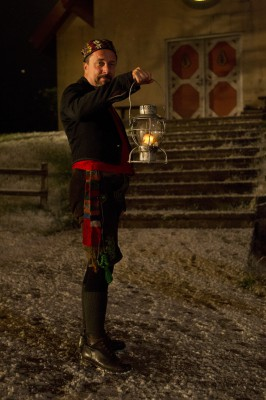

#5356 Bob, der Streuner
Alternativ: A Street Cat Named Bob


 IMDB-Wertung: 7.3 / 10
IMDB-Wertung: 7.3 / 10  Metascore: 0
Metascore: 0 
Das Letzte was James gebrauchen kann, ist ein Haustier! Er schlägt sich von Tag zu Tag als Straßenmusiker durch und sein mageres Einkommen reicht gerade, um sich selbst über Wasser zu halten. Und jetzt auch noch das: Als er eines Abends einen abgemagerten, verletzten Kater vor seiner Tür findet, scheint er sein tierisches Ebenbild zu treffen. Obwohl knapp bei Kasse beschließt er, den aufgeweckten Kater aufzupäppeln, um ihn dann wieder seines Weges ziehen zu lassen. Doch Bob hat seinen eigenen Kopf und denkt gar nicht daran, James zu verlassen. Er folgt ihm auf Schritt und Tritt. Für James ist nichts mehr wie es war. Bob und er werden unzertrennliche Freunde und James findet Dank Bob nach und nach den Weg zurück ins Leben….
Jahr: 2016
Dauer: 103 Minuten
FSK: 12
Land: England Studio: Concorde FilmverleihTonspuren: DTS - ,
Untertitel: Deutsch,
Auflösung: 1080p (1920x802) Größe: 9011 MB
Genre: Drama, Komödie, Familie, Biographie
Regisseur:  Roger Spottiswoode
Roger Spottiswoode
Drehbuch: Bill O'Brien
Soundtrack:
Darsteller:
 Luke Treadaway als James
Luke Treadaway als James- Bob the Cat als Bob
- Ruta Gedmintas als Betty
 Joanne Froggatt als Val
Joanne Froggatt als Val Anthony Head als Jack Bowen
Anthony Head als Jack Bowen- Darren Evans als Baz
 Lorraine Ashbourne als Local Housing Officer
Lorraine Ashbourne als Local Housing Officer- Akbar Kurtha als Pharmacist
 Beth Goddard als Hilary
Beth Goddard als Hilary- Ivana Basic als Vet Receptionist
- Nina Wadia als Bus Conductress
- Rosie Ede als Cat Lover
 Ruth Sheen als Elsie
Ruth Sheen als Elsie Caroline Goodall als Mary
Caroline Goodall als Mary- Gemma Nichols als Tourist
-  Rob Jarvis als Peter Gruner
- Jill Winternitz als American Wife
 Jozef Aoki als Asian Tourist , uncredited
Jozef Aoki als Asian Tourist , uncredited Jill Buchanan als Passerby - Covent Garden , uncredited
Jill Buchanan als Passerby - Covent Garden , uncredited- Stephan Genovese als On-looker , uncredited
 Lee Nicholas Harris als Arresting Police Officer 492 , uncredited
Lee Nicholas Harris als Arresting Police Officer 492 , uncredited Shina Shihoko Nagai als Photographer , uncredited
Shina Shihoko Nagai als Photographer , uncredited- Alice Pins als Junkie , uncredited
 Daniel Stisen als Himself , uncredited
Daniel Stisen als Himself , uncredited- Cache Thake als Teenager , uncredited
- Tony Jayawardena als Tony
- Adam Riches als Man with Car
- Llewella Gideon als Meter Woman
 John Henshaw als Tube Station Guard
John Henshaw als Tube Station Guard- Jessica Woodland als Vet Assistant
- Mark Behan als Drug Dealer
- Gary Hughes als Bodyguard
- Sasha Dickens als Faith
- Cleopatra Dickens als Pris
- Jacob James Beswick als Aggressive Dog Owner
- Nadine Marshall als Kelly
- Taylor Keegan als Tourist
- Brian Doherty als Geoff
- Ben Deery als American Husband
- George Turner als Graham
- Hattie Ladbury als Rich Woman
 Daniel Fearn als Kelvin's Owner
Daniel Fearn als Kelvin's Owner- Franc Ashman als Danielle
- Margot Edwards als Cat Enthusiast
- James Bowen als Himself
- Pearl Maburutse als Beatbox Performer
- Prince Dave als Passer-by , uncredited
- Kevin Hudson als H, the Covent Guardian , uncredited
- Kaveh Khatiri als Passer-by , uncredited
- Rohan Mehra als Generous pedestrian , uncredited
Datei: X:\2016(A-F)\Bob, der Streuner (2016, FSK12, 1920x802).mkv seit 17.01.2017
Festplatte: HD 2016(A-Z)
 Es gibt insgesamt 147 Filme in der Gruppe '2016(A-F)'
Es gibt insgesamt 147 Filme in der Gruppe '2016(A-F)'